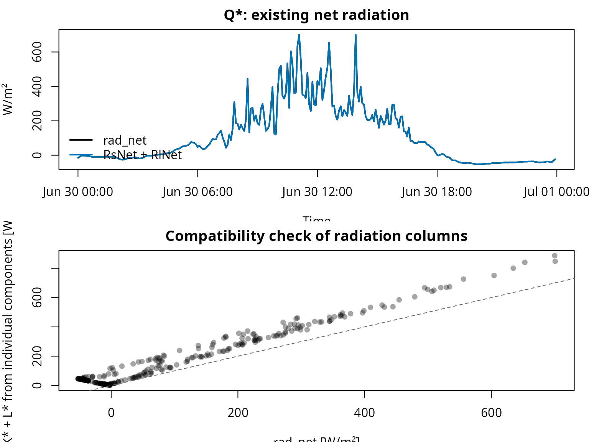
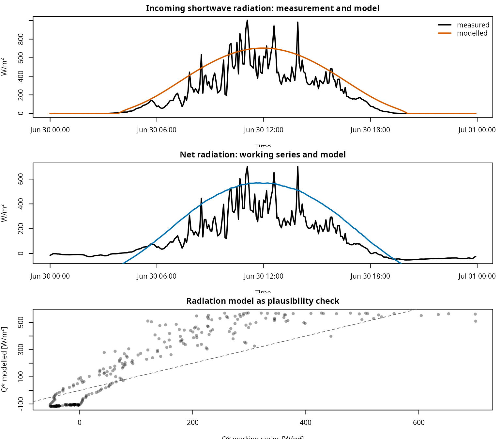
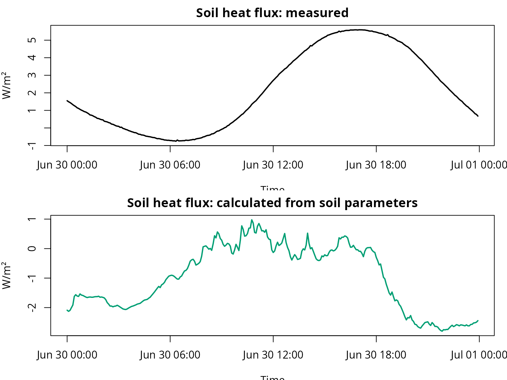
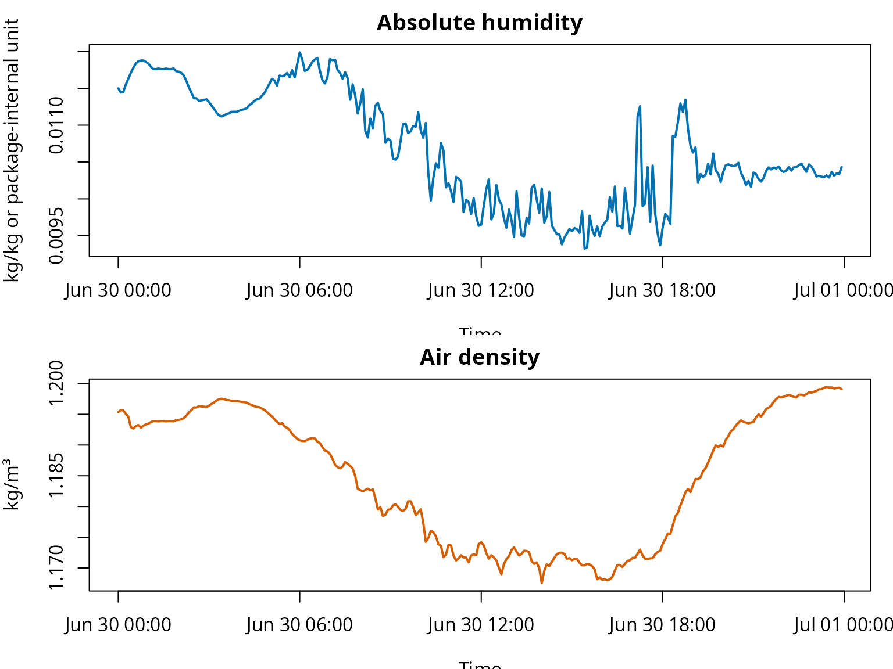
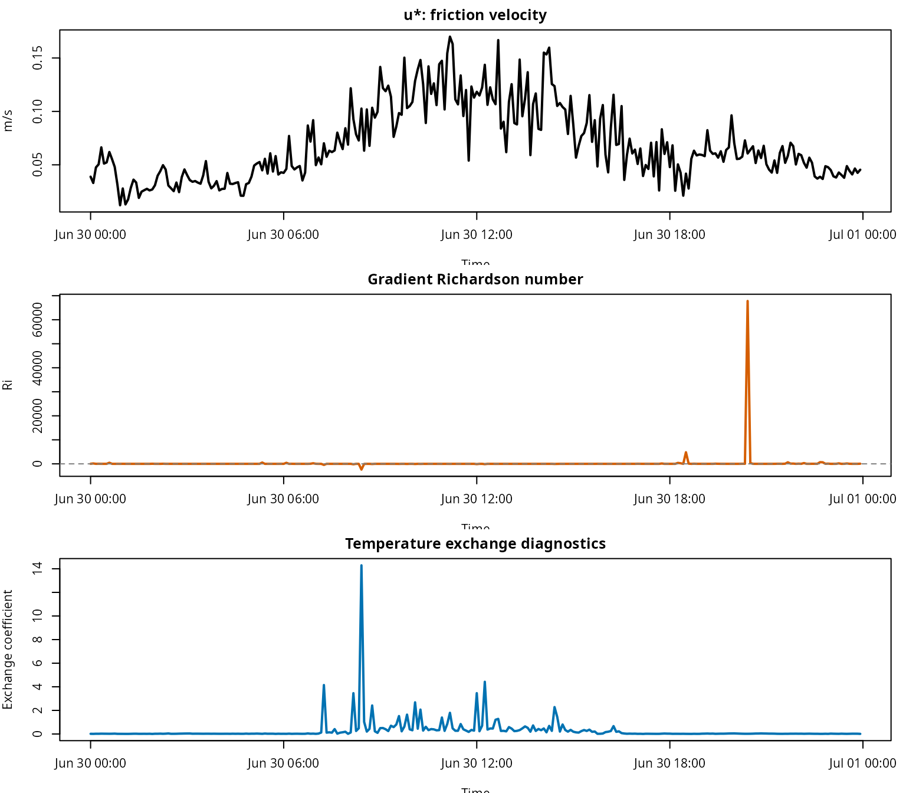
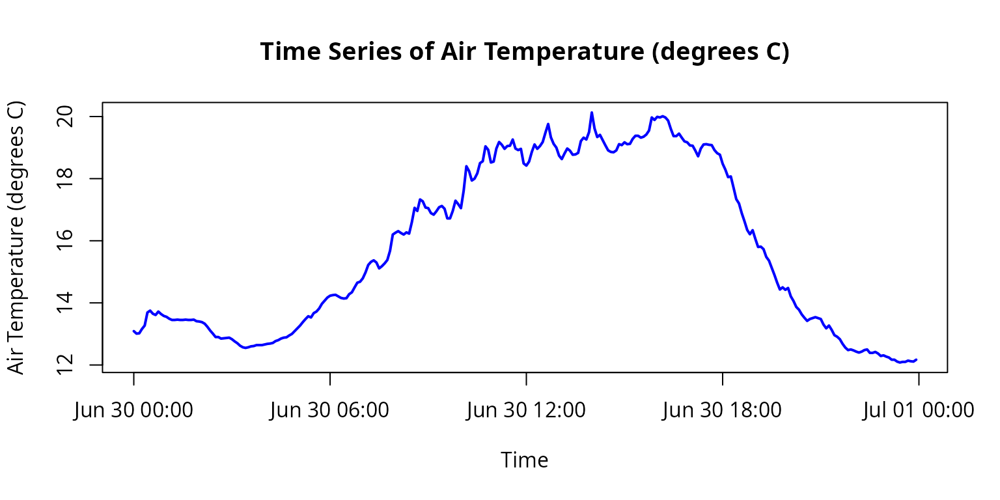

fieldClim: Follow-up workflows and additional package functions
Jörg Bendix, Chris Reudenbach
2026-05-28
Source:vignettes/fieldclim_workflow_steps_en.Rmd
fieldclim_workflow_steps_en.RmdAim of this vignette
This vignette complements the energy-balance workflow vignette. That vignette focuses on the coherent Caldern workflow with \(Q^{*}\), \(B\), \(L\), and \(V\). This page presents the additional package functions as follow-up workflows: radiation checks, modelled radiation, soil parameters, meteorological helper variables, stability variables, and object control.
The text is not a second comparison of methods. The central question here is: Which groups of functions exist beyond the main workflow, what are they practically useful for, and which limitations must be considered when applying them?
| Module | Guiding question | Package area |
|---|---|---|
| 0 | How does the package work in general? |
weather_station, default methods, S3 methods |
| 1 | How can radiation time series be checked without silently replacing measurements? |
rad_*, measurement columns, time-series checks |
| 2 | How can radiation be modelled when measurements are missing or when a plausibility benchmark is needed? |
sol_*, trans_*, terr_*,
rad_*
|
| 3 | How are soil parameters and soil heat flux handled? | soil_* |
| 4 | Which helper variables are needed for humidity, pressure, and temperature? |
hum_*, pres_*, temp_*
|
| 5 | How are the wind profile, Richardson number, and stability variables checked? |
turb_*, bound_*
|
| 6 | How is a weather_station object checked, plotted, and
exported? |
build_weather_station(),
plot_weather_station(), as.data.frame()
|
This vignette is a package map with executable mini examples. It does not replace a complete physical derivation, nor does it provide testing against independent flux measurements. Its purpose is to show which package functions fit which workflow steps.
Shared data and object setup
All modules use the same small teaching dataset. The dataset is
included in the installed package under inst/extdata/.
# Load fieldClim.
library(fieldClim)
# Path to the included teaching file.
caldern_file <- system.file(
"extdata",
"caldern_wiese_2017-06-30.csv",
package = "fieldClim"
)
# Read the CSV file.
# "NULL", "NA", and empty entries are treated as missing values.
caldern <- read.csv(
caldern_file,
na.strings = c("NULL", "NA", "")
)
# Interpret timestamps explicitly as local station time.
caldern$datetime <- as.POSIXct(
caldern$datetime,
format = "%Y-%m-%d %H:%M:%S",
tz = "Europe/Berlin"
)
# The solar and radiation functions can work with POSIXct timestamps.
# The time zone therefore remains explicitly set.
# Basic checks.
nrow(caldern)
#> [1] 288
range(caldern$datetime)
#> [1] "2017-06-30 00:00:00 CEST" "2017-06-30 23:55:00 CEST"
summary(diff(caldern$datetime))
#> Time differences in mins
#> Min. 1st Qu. Median Mean 3rd Qu. Max.
#> 5 5 5 5 5 5
names(caldern)
#> [1] "record" "datetime" "Ta_2m" "Huma_2m"
#> [5] "Ta_10m" "Huma_10m" "Windspeed_2m" "Windspeed_10m"
#> [9] "rad_sw_in" "rad_sw_out" "RsNet" "RlNet"
#> [13] "rad_net" "LUpCo" "LDnCo" "water_vol_soil"
#> [17] "Ts" "heatflux_soil" "PCP"
# A weather_station object combines measurements, location, and model assumptions.
# This object can be passed to many package functions.
ws <- build_weather_station(
datetime = caldern$datetime,
lon = 8.6832,
lat = 50.8405,
elev = 261,
temp = caldern$Ta_2m,
rh = caldern$Huma_2m,
t1 = caldern$Ta_2m,
t2 = caldern$Ta_10m,
hum1 = caldern$Huma_2m,
hum2 = caldern$Huma_10m,
v1 = caldern$Windspeed_2m,
v2 = caldern$Windspeed_10m,
z1 = 2,
z2 = 10,
slope = 0,
exposition = 0,
valley = FALSE,
surface_type = "field",
surface_temp = caldern$Ts,
texture = "peat",
moisture = caldern$water_vol_soil,
rad_bal = caldern$rad_net,
soil_flux = caldern$heatflux_soil,
soil_temp1 = caldern$Ts,
soil_temp2 = caldern$Ta_2m,
soil_depth1 = 0.25,
soil_depth2 = 0,
obs_height = 2
)
class(ws)
#> [1] "weather_station"
names(ws)
#> [1] "datetime" "lon" "lat" "elev" "temp"
#> [6] "rh" "t1" "t2" "hum1" "hum2"
#> [11] "v1" "v2" "z1" "z2" "slope"
#> [16] "exposition" "valley" "surface_type" "surface_temp" "texture"
#> [21] "moisture" "rad_bal" "soil_flux" "soil_temp1" "soil_temp2"
#> [26] "soil_depth1" "soil_depth2" "obs_height"Interpretation. The weather_station
object is the central working container of the package. Many functions
have two usage forms: a default method with individual arguments and a
method for weather_station. The object-based route is
useful as soon as several functions need the same measurements, site
data, and surface assumptions.
Workflow module 0: Default method or weather_station method?
Almost every central function can be used directly with individual
arguments or with a weather_station object.
# Default method: all required arguments are provided individually.
pres_p(elev = 261, temp = 20)
#> [1] 982.884
# Object method: the function reads the required variables from the weather_station object.
pres_p(ws)
#> [1] 982.1623 982.1537 982.1548 982.1697 982.1815 982.2263 982.2327 982.2220
#> [9] 982.2178 982.2295 982.2210 982.2146 982.2114 982.2050 982.2007 982.2007
#> [17] 982.2018 982.2007 982.2007 982.2018 982.2007 982.2007 982.2018 982.1964
#> [25] 982.1954 982.1932 982.1879 982.1772 982.1644 982.1537 982.1419 982.1419
#> [33] 982.1366 982.1376 982.1387 982.1398 982.1344 982.1269 982.1205 982.1119
#> [41] 982.1066 982.1044 982.1066 982.1098 982.1109 982.1141 982.1141 982.1141
#> [49] 982.1162 982.1184 982.1194 982.1216 982.1280 982.1312 982.1366 982.1398
#> [57] 982.1409 982.1473 982.1526 982.1623 982.1719 982.1815 982.1932 982.2039
#> [65] 982.2135 982.2092 982.2242 982.2295 982.2401 982.2561 982.2667 982.2773
#> [73] 982.2837 982.2858 982.2869 982.2816 982.2762 982.2741 982.2752 982.2890
#> [81] 982.2953 982.3123 982.3282 982.3313 982.3430 982.3630 982.3884 982.3989
#> [89] 982.4042 982.3968 982.3768 982.3841 982.3936 982.4052 982.4367 982.4913
#> [97] 982.4976 982.5028 982.4965 982.4913 982.4986 982.4944 982.5331 982.5810
#> [105] 982.5706 982.6091 982.6029 982.5821 982.5800 982.5633 982.5581 982.5696
#> [113] 982.5831 982.5873 982.5779 982.5456 982.5456 982.5706 982.6049 982.5935
#> [121] 982.5800 982.6382 982.7198 982.7033 982.6723 982.6785 982.6961 982.7302
#> [129] 982.7363 982.7857 982.7744 982.7322 982.7353 982.7785 982.8001 982.7908
#> [137] 982.7775 982.7867 982.7878 982.8083 982.7785 982.7734 982.7775 982.7291
#> [145] 982.7219 982.7353 982.7672 982.7919 982.7775 982.7867 982.8001 982.8308
#> [153] 982.8594 982.8154 982.7939 982.7816 982.7549 982.7435 982.7621 982.7785
#> [161] 982.7713 982.7580 982.7590 982.7641 982.8031 982.8144 982.8083 982.8329
#> [169] 982.8972 982.8451 982.8165 982.8236 982.8062 982.7888 982.7723 982.7672
#> [177] 982.7662 982.7723 982.7929 982.7898 982.7990 982.7929 982.7939 982.8103
#> [185] 982.8206 982.8206 982.8144 982.8175 982.8247 982.8380 982.8809 982.8727
#> [193] 982.8829 982.8809 982.8850 982.8809 982.8707 982.8431 982.8195 982.8195
#> [201] 982.8277 982.8144 982.8021 982.7990 982.7888 982.7878 982.7713 982.7528
#> [209] 982.7785 982.7919 982.7929 982.7908 982.7898 982.7734 982.7631 982.7580
#> [217] 982.7281 982.7085 982.6837 982.6858 982.6485 982.6101 982.5956 982.5633
#> [225] 982.5362 982.5070 982.4923 982.5059 982.4766 982.4493 982.4504 982.4420
#> [233] 982.4157 982.4031 982.3789 982.3546 982.3282 982.3049 982.3123 982.3038
#> [241] 982.3102 982.2816 982.2656 982.2454 982.2359 982.2199 982.2082 982.1975
#> [249] 982.2039 982.2071 982.2103 982.2071 982.2039 982.1847 982.1719 982.1815
#> [257] 982.1665 982.1484 982.1430 982.1344 982.1184 982.1055 982.0969 982.0990
#> [265] 982.0958 982.0915 982.0883 982.0915 982.0969 982.0990 982.0872 982.0872
#> [273] 982.0905 982.0851 982.0765 982.0786 982.0743 982.0711 982.0636 982.0636
#> [281] 982.0571 982.0539 982.0560 982.0560 982.0604 982.0582 982.0571 982.0636Interpretation. The default method is useful for
individual tests and for tracing formulas. The
weather_station method is better for workflows because it
carries the same data structure through several calculation steps.
Workflow module 1: Check radiation time series and define the working variable
Radiation time series are often the most important input for energy-balance calculations. Before \(Q^{*}\) is used as net radiation, the components must be checked.
The shortwave balance is:
\[ K^{*} = K_{\downarrow} - K_{\uparrow} \]
with:
- \(K^{*}\): shortwave balance [W/m²]
- \(K_{\downarrow}\): incoming shortwave radiation [W/m²]
- \(K_{\uparrow}\): reflected shortwave radiation [W/m²]
The longwave balance is written here in the same direction:
\[ L^{*} = L_{\downarrow} - L_{\uparrow} \]
with:
- \(L^{*}\): longwave balance [W/m²]
- \(L_{\downarrow}\): incoming longwave radiation [W/m²]
- \(L_{\uparrow}\): longwave emission from the surface [W/m²]
The net radiation is theoretically given by:
\[ Q^{*} = K^{*} + L^{*} \]
with:
- \(Q^{*}\): net radiation or radiation balance [W/m²]
1.1 Calculate components and compare them with stored net columns
# Shortwave components from measurement columns.
caldern$K_down <- caldern$rad_sw_in
caldern$K_up <- caldern$rad_sw_out
caldern$K_star_from_components <- caldern$K_down - caldern$K_up
# Longwave components from measurement columns.
caldern$L_down <- caldern$LDnCo
caldern$L_up <- caldern$LUpCo
caldern$L_star_down_minus_up <- caldern$L_down - caldern$L_up
caldern$L_star_up_minus_down <- caldern$L_up - caldern$L_down
# Check against existing net columns.
shortwave_check <- summary(caldern$K_star_from_components - caldern$RsNet)
longwave_check_down_up <- summary(caldern$L_star_down_minus_up - caldern$RlNet)
longwave_check_up_down <- summary(caldern$L_star_up_minus_down - caldern$RlNet)
shortwave_check
#> Min. 1st Qu. Median Mean 3rd Qu. Max.
#> -0.400000 0.000000 0.000000 0.004208 0.001000 0.500000
longwave_check_down_up
#> Min. 1st Qu. Median Mean 3rd Qu. Max.
#> 3.595 32.337 78.015 74.076 100.468 187.400
longwave_check_up_down
#> Min. 1st Qu. Median Mean 3rd Qu. Max.
#> -0.090000 -0.030000 0.000000 -0.001698 0.030000 0.100000Interpretation. This step checks which column
definition is consistent. If rad_sw_in - rad_sw_out matches
RsNet well, the shortwave balance is clear. For the
longwave balance, the sign direction must be checked. Depending on
whether LDnCo - LUpCo or LUpCo - LDnCo matches
RlNet better, a different convention is present.
1.2 Check net radiation from net columns and individual components
# Variant A: net radiation from stored net columns.
caldern$Q_star_from_net_columns <- caldern$RsNet + caldern$RlNet
# Variant B: net radiation from individual components.
caldern$Q_star_from_components <- caldern$K_star_from_components +
caldern$L_star_down_minus_up
# Existing net radiation.
caldern$Q_star_measured <- caldern$rad_net
# Check differences.
summary(caldern$Q_star_from_net_columns - caldern$Q_star_measured)
#> Min. 1st Qu. Median Mean 3rd Qu. Max.
#> -0.100000 -0.010000 0.000000 -0.002542 0.005000 0.100000
summary(caldern$Q_star_from_components - caldern$Q_star_measured)
#> Min. 1st Qu. Median Mean 3rd Qu. Max.
#> 3.595 32.331 78.013 74.078 100.515 187.700
op <- par(mfrow = c(2, 1), mar = c(3.5, 4, 2, 1))
plot(
caldern$datetime,
caldern$Q_star_measured,
type = "l",
col = "#000000",
lwd = 2,
xlab = "Time",
ylab = "W/m²",
main = "Q*: existing net radiation"
)
lines(caldern$datetime, caldern$Q_star_from_net_columns, col = "#0072B2", lwd = 2)
legend(
"bottomleft",
legend = c("rad_net", "RsNet + RlNet"),
col = c("#000000", "#0072B2"),
lty = 1,
lwd = 2,
bty = "n"
)
plot(
caldern$Q_star_measured,
caldern$Q_star_from_components,
pch = 16,
col = rgb(0, 0, 0, 0.35),
xlab = "rad_net [W/m²]",
ylab = "K* + L* from individual components [W/m²]",
main = "Compatibility check of radiation columns"
)
abline(0, 1, lty = 2, col = "grey40")
par(op)Interpretation. This module is a data-check
workflow. The package functions can only be used meaningfully when it is
clear which radiation variable is used as the working variable. If
rad_net, RsNet + RlNet, and
K* + L* diverge, a new net radiation series is not created
automatically. Instead, the first step is to document which column
represents which balance level.
1.3 Define the radiation time series for further calculations
# Working decision:
# For energy-balance workflows, the existing rad_net column is used.
# The other variants remain diagnostic variables.
caldern$Q_star <- caldern$Q_star_measured
# Document summary statistics of the differences.
radiation_decision <- data.frame(
Comparison = c(
"RsNet + RlNet against rad_net",
"K* + L* against rad_net"
),
Mean_deviation = c(
mean(caldern$Q_star_from_net_columns - caldern$Q_star_measured, na.rm = TRUE),
mean(caldern$Q_star_from_components - caldern$Q_star_measured, na.rm = TRUE)
),
Max_abs_deviation = c(
max(abs(caldern$Q_star_from_net_columns - caldern$Q_star_measured), na.rm = TRUE),
max(abs(caldern$Q_star_from_components - caldern$Q_star_measured), na.rm = TRUE)
)
)
radiation_decision[, -1] <- round(radiation_decision[, -1], 1)
radiation_decision
#> Comparison Mean_deviation Max_abs_deviation
#> 1 RsNet + RlNet against rad_net 0.0 0.1
#> 2 K* + L* against rad_net 74.1 187.7Interpretation. This is the actual “fix”: do not silently overwrite values, but define a working series and keep the alternatives as diagnostic variables. When heat fluxes are calculated later, it remains transparent which version of \(Q^{*}\) was used.
1.4 Check time lag
A time lag of one 5-minute step can create large deviations in radiation data.
# Mean absolute deviation without lag.
diff_0 <- mean(abs(
caldern$Q_star_from_components - caldern$Q_star_measured
), na.rm = TRUE)
# Compare the component sum one step later against rad_net.
diff_plus <- mean(abs(
caldern$Q_star_from_components[-1] -
caldern$Q_star_measured[-length(caldern$Q_star_measured)]
), na.rm = TRUE)
# Compare the component sum one step earlier against rad_net.
diff_minus <- mean(abs(
caldern$Q_star_from_components[-length(caldern$Q_star_from_components)] -
caldern$Q_star_measured[-1]
), na.rm = TRUE)
lag_check <- data.frame(
Comparison = c(
"without lag",
"components +1 step",
"components -1 step"
),
mean_absolute_deviation = c(diff_0, diff_plus, diff_minus)
)
lag_check$mean_absolute_deviation <- round(
lag_check$mean_absolute_deviation,
1
)
lag_check
#> Comparison mean_absolute_deviation
#> 1 without lag 74.1
#> 2 components +1 step 83.4
#> 3 components -1 step 85.8Interpretation. If a shifted comparison becomes clearly better, a timestamp or aggregation problem is likely. If it does not improve, this points more toward different column definitions, correction levels, or sign conventions.
Workflow module 2: Model radiation instead of only measuring it
The radiation functions can be used to check the plausibility of measurements or to model missing radiation components. The package workflow follows a chain:
| Subproblem | Function family | Role |
|---|---|---|
| Solar position | sol_* |
Day angle, solar elevation, azimuth |
| Atmospheric attenuation | trans_* |
Air mass, gas, ozone, Rayleigh, water-vapour, and aerosol transmission |
| Terrain | terr_* |
Terrain and sky-view geometry |
| Radiation | rad_* |
Shortwave, diffuse, longwave, and net radiation |
# Example timestamp for an individual test.
# POSIXct is deliberately retained here; the current package version handles
# POSIXct/POSIXlt consistently.
example_time <- as.POSIXct("2017-06-30 12:00:00", tz = "Europe/Berlin")
# Location and assumptions.
lon <- 8.6832
lat <- 50.8405
elev <- 261
temp <- 20
rh <- 60
slope <- 0
exposition <- 0
valley <- FALSE
surface_type <- "field"
surface_temp <- 20
# Solar and topographic partial variables.
sol_elevation(example_time, lon, lat)
#> [1] 62.36272
sol_azimuth(example_time, lon, lat)
#> [1] 181.1272
terr_sky_view(slope, valley)
#> [1] 1
# Modelled shortwave and longwave radiation.
rad_sw_in(example_time, lon, lat, elev, temp, slope, exposition)
#> [1] 704.2516
rad_sw_bal(example_time, lon, lat, elev, temp, slope, exposition, valley, surface_type)
#> [1] 673.2495
rad_lw_bal(temp, rh, slope, valley, surface_type, surface_temp)
#> [1] -105.0535
# Modelled net radiation.
rad_bal(
example_time, lon, lat, elev, temp, rh,
slope, exposition, valley, surface_type, surface_temp
)
#> [1] 568.196Interpretation. This module is relevant when radiation components are missing or when measurements need to be checked against a plausible order of magnitude. Modelled radiation is not an automatic replacement measurement here. It is a benchmark: if the diurnal cycle and magnitude roughly agree, this supports a consistent time basis and realistic site assumptions. If measurement and model diverge strongly, the first checks should address time zone, surface type, terrain parameters, sensor processing, or differently defined radiation components. The time basis is technically important here: the current package version handles POSIXct and POSIXlt timestamps consistently. The key point remains that the time zone must be set explicitly because solar position and radiation depend on local time.
2.1 Compare measured and modelled radiation as a diurnal cycle
# Modelled incoming shortwave radiation for the full teaching day.
# The function is vectorised over the POSIXct time axis.
caldern$K_down_model <- rad_sw_in(
caldern$datetime,
lon, lat, elev, caldern$Ta_2m,
slope, exposition
)
# Modelled shortwave balance.
caldern$K_star_model <- rad_sw_bal(
caldern$datetime,
lon, lat, elev, caldern$Ta_2m,
slope, exposition, valley, surface_type
)
# Modelled longwave balance.
caldern$L_star_model <- rad_lw_bal(
caldern$Ta_2m,
caldern$Huma_2m,
slope,
valley,
surface_type,
caldern$Ts
)
# Modelled net radiation.
caldern$Q_star_model <- rad_bal(
caldern$datetime,
lon, lat, elev, caldern$Ta_2m, caldern$Huma_2m,
slope, exposition, valley, surface_type, caldern$Ts
)
op <- par(mfrow = c(3, 1), mar = c(3.5, 4, 2, 1))
plot(
caldern$datetime,
caldern$K_down,
type = "l",
col = "#000000",
lwd = 2,
xlab = "Time",
ylab = "W/m²",
main = "Incoming shortwave radiation: measurement and model"
)
lines(caldern$datetime, caldern$K_down_model, col = "#D55E00", lwd = 2)
legend(
"topright",
legend = c("measured", "modelled"),
col = c("#000000", "#D55E00"),
lty = 1,
lwd = 2,
bty = "n"
)
plot(
caldern$datetime,
caldern$Q_star,
type = "l",
col = "#000000",
lwd = 2,
xlab = "Time",
ylab = "W/m²",
main = "Net radiation: working series and model"
)
lines(caldern$datetime, caldern$Q_star_model, col = "#0072B2", lwd = 2)
plot(
caldern$Q_star,
caldern$Q_star_model,
pch = 16,
col = rgb(0, 0, 0, 0.35),
xlab = "Q* working series [W/m²]",
ylab = "Q* modelled [W/m²]",
main = "Radiation model as plausibility check"
)
abline(0, 1, lty = 2, col = "grey40")
par(op)Interpretation. Modelled radiation does not automatically replace measurement. It helps identify whether measurement series are temporally plausible and whether terrain, surface, or transmission assumptions produce realistic orders of magnitude.
Workflow module 3: Soil parameters and soil heat flux
Soil heat flux can be measured or estimated from the temperature gradient, depth, moisture, and soil texture. The package workflow is:
\[ B = -\lambda_s \frac{T_1 - T_2}{z_1 - z_2} \]
with:
- \(B\): soil heat flux [W/m²]
- \(\lambda_s\): soil thermal conductivity [W/(m K)]
- \(T_1\): soil temperature at depth \(z_1\) [°C or K]
- \(T_2\): temperature at the second depth or at the surface \(z_2\) [°C or K]
- \(z_1\): depth of the first sensor [m]
- \(z_2\): depth of the second reference [m]
# Thermal conductivity for the selected soil texture and moisture.
soil_thermal_cond(texture = "peat", moisture = mean(caldern$water_vol_soil, na.rm = TRUE))
#> [1] 0.1634507
# Soil heat flux from the weather_station object.
caldern$B_model <- soil_heat_flux(ws)
# Measured working variable.
caldern$B_measured <- caldern$heatflux_soil
summary(caldern$B_model - caldern$B_measured)
#> Min. 1st Qu. Median Mean 3rd Qu. Max.
#> -7.0809 -5.4063 -2.9097 -3.1374 -0.9378 0.7452
op <- par(mfrow = c(2, 1), mar = c(3.5, 4, 2, 1))
plot(
caldern$datetime,
caldern$B_measured,
type = "l",
col = "#000000",
lwd = 2,
xlab = "Time",
ylab = "W/m²",
main = "Soil heat flux: measured"
)
plot(
caldern$datetime,
caldern$B_model,
type = "l",
col = "#009E73",
lwd = 2,
xlab = "Time",
ylab = "W/m²",
main = "Soil heat flux: calculated from soil parameters"
)
par(op)Interpretation. The soil module is mainly useful in
two situations: either directly measured soil heat flux is missing, or
soil moisture and texture are to be varied as scenarios. However, a
value calculated from a temperature gradient and soil parameters is not
the same as a heat-flux plate measurement. Differences are therefore
expected. For the energy balance, it is important to preserve the sign
convention: in fieldClim, positive soil_flux
means that heat enters the soil and is therefore subtracted from the
available turbulent energy.
Workflow module 4: Humidity, pressure, and temperature as helper variables
Humidity, pressure, and temperature functions are usually not end products. They provide intermediate variables for radiation, stability, and heat-flux methods.
# Absolute humidity from relative humidity and temperature.
caldern$hum_abs <- hum_absolute(caldern$Huma_2m, caldern$Ta_2m)
# Latent heat of vaporisation as a temperature-dependent helper variable.
caldern$evap_heat <- hum_evap_heat(caldern$Ta_2m)
# Humidity gradient between two measurement heights.
caldern$hum_gradient <- hum_moisture_gradient(
caldern$Huma_2m,
caldern$Huma_10m,
caldern$Ta_2m,
caldern$Ta_10m,
2,
10,
261
)
# Air density from elevation and temperature.
caldern$air_density <- pres_air_density(261, caldern$Ta_2m)
# Potential temperature.
caldern$theta <- temp_pot_temp(caldern$Ta_2m, 261)
summary(caldern[, c("hum_abs", "evap_heat", "hum_gradient", "air_density", "theta")])
#> hum_abs evap_heat hum_gradient air_density
#> Min. :0.009325 Min. :2453052 Min. :-1.384e-04 Min. :1.168
#> 1st Qu.:0.010098 1st Qu.:2456082 1st Qu.:-5.213e-05 1st Qu.:1.172
#> Median :0.010462 Median :2464544 Median :-3.834e-05 Median :1.187
#> Mean :0.010676 Mean :2463389 Mean :-3.671e-05 Mean :1.185
#> 3rd Qu.:0.011350 3rd Qu.:2469324 3rd Qu.:-2.394e-05 3rd Qu.:1.195
#> Max. :0.011986 Max. :2472146 Max. : 1.735e-05 Max. :1.199
#> theta
#> Min. :13.56
#> 1st Qu.:14.75
#> Median :16.75
#> Mean :17.24
#> 3rd Qu.:20.31
#> Max. :21.58
op <- par(mfrow = c(2, 1), mar = c(3.5, 4, 2, 1))
plot(
caldern$datetime,
caldern$hum_abs,
type = "l",
col = "#0072B2",
lwd = 2,
xlab = "Time",
ylab = "kg/kg or package-internal unit",
main = "Absolute humidity"
)
plot(
caldern$datetime,
caldern$air_density,
type = "l",
col = "#D55E00",
lwd = 2,
xlab = "Time",
ylab = "kg/m³",
main = "Air density"
)
par(op)Interpretation. These helper variables are intermediate steps, not independent result fluxes. Absolute humidity, potential temperature, air density, and latent heat of vaporisation later enter gradient analyses, Bowen, Penman, and profile methods. This is exactly why they matter: a small unit or scaling error in a helper variable can later appear as a large difference in heat flux.
Workflow module 5: Wind profile, Richardson number, and stability
Before using more complex heat-flux methods, the wind profile,
roughness, and stability should be checked. The package provides several
turb_* functions for this purpose.
# Roughness length from the surface type.
z0 <- turb_roughness_length("field")
z0
#> [1] 0.02
# Friction velocity from wind speed and measurement height.
caldern$u_star <- turb_ustar(caldern$Windspeed_2m, 2, surface_type = "field")
# Gradient Richardson number.
caldern$richardson <- turb_flux_grad_rich_no(
caldern$Ta_2m,
caldern$Ta_10m,
2,
10,
caldern$Windspeed_2m,
caldern$Windspeed_10m,
261
)
# Exchange and stability variables from the package.
caldern$exchange_temp <- turb_flux_ex_quotient_temp(
caldern$Ta_2m,
caldern$Ta_10m,
2,
10,
caldern$Windspeed_2m,
caldern$Windspeed_10m,
261,
"field"
)
summary(caldern[, c("u_star", "richardson", "exchange_temp")])
#> u_star richardson exchange_temp
#> Min. :0.01216 Min. :-2389.420 Min. : 0.007292
#> 1st Qu.:0.04271 1st Qu.: -0.398 1st Qu.: 0.020282
#> Median :0.05959 Median : 1.346 Median : 0.029678
#> Mean :0.06898 Mean : 265.130 Mean : 0.301201
#> 3rd Qu.:0.09205 3rd Qu.: 7.225 3rd Qu.: 0.259571
#> Max. :0.16998 Max. :67806.240 Max. :14.292973
op <- par(mfrow = c(3, 1), mar = c(3.5, 4, 2, 1))
plot(
caldern$datetime,
caldern$u_star,
type = "l",
col = "#000000",
lwd = 2,
xlab = "Time",
ylab = "m/s",
main = "u*: friction velocity"
)
plot(
caldern$datetime,
caldern$richardson,
type = "l",
col = "#D55E00",
lwd = 2,
xlab = "Time",
ylab = "Ri",
main = "Gradient Richardson number"
)
abline(h = 0, lty = 2, col = "grey50")
plot(
caldern$datetime,
caldern$exchange_temp,
type = "l",
col = "#0072B2",
lwd = 2,
xlab = "Time",
ylab = "Exchange coefficient",
main = "Temperature exchange diagnostics"
)
par(op)Interpretation. This module checks whether the profile information is usable at all. Richardson number and exchange variables depend on temperature differences, wind-speed differences, and measurement heights. If wind shear is very small or signs change, stability statements become sensitive. These are exactly the situations that later explain why profile-based heat-flux values can become conspicuous. The values should therefore first be read as plausibility and screening variables, not as an energy balance of their own.
5.1 Document protection parameters and critical edge cases
Some methods have cap arguments or return
NA in a controlled way for invalid cases. These protection
mechanisms are not a physical solution. They mark or limit situations in
which denominators are close to zero, intermediate values are
non-finite, or profile conditions are extremely sensitive.
# Bowen with and without cap.
V_bowen_no_cap <- latent_bowen(ws)
V_bowen_cap <- latent_bowen(ws, cap = 1)
# Monin-Obukhov with and without cap.
L_monin_no_cap <- sensible_monin(ws)
L_monin_cap <- sensible_monin(ws, cap = 20)
summary(V_bowen_no_cap)
#> Min. 1st Qu. Median Mean 3rd Qu. Max.
#> -323.45 17.76 95.07 129.82 187.35 2646.18
summary(V_bowen_cap)
#> Min. 1st Qu. Median Mean 3rd Qu. Max.
#> -50.662 8.904 55.312 98.534 171.439 479.809
summary(L_monin_no_cap)
#> Min. 1st Qu. Median Mean 3rd Qu. Max.
#> -12.1277 -2.1647 -0.6137 104.1896 77.8327 2223.4756
summary(L_monin_cap)
#> Min. 1st Qu. Median Mean 3rd Qu. Max.
#> -12.1277 -2.1647 -0.6137 61.5833 71.8363 881.3943Interpretation. Caps and protection rules do not
change the measurements. They prevent individual denominators close to
zero or non-finite intermediate values from producing uncontrolled
outliers. This is neither scientific confirmation nor a repair of the
time step. A capped value or a value treated as NA remains
an indication that the respective profile or gradient situation is
critical.
5.2 Boundary-layer functions as a follow-up workflow
The update documentation mentions bound_thermal_avg() in
connection with turb_ustar(). This function group is a
follow-up workflow of its own for mechanical or thermal boundary-layer
variables. It is not developed fully here, but can be explored through
the help pages.
# Check formal interfaces without forcing an artificial example value.
if ("bound_thermal_avg" %in% getNamespaceExports("fieldClim")) {
formals(bound_thermal_avg)
}
#> $v
#>
#>
#> $z
#>
#>
#> $temp_change_dist
#>
#>
#> $t_pot_upwind
#>
#>
#> $t_pot
#>
#>
#> $lapse_rate
#>
#>
#> $surface_type
#> NULL
#>
#> $obs_height
#> NULLInterpretation. This block is deliberately small. Boundary-layer variables are not a by-product that can be meaningfully evaluated from every station dataset without a specific question. The helper functions show the available interface; a robust boundary-layer workflow, however, requires suitable input data and its own model assumption.
Workflow module 6: Print, plot, and export the object
After calculations, the weather_station object contains
additional fields. These can be printed as a table, plotted, or exported
for further analyses.
# PT path as an example calculation.
ws_pt <- turb_flux_calc(ws, pt_only = TRUE)
# Convert the result object into a table.
ws_table <- as.data.frame(ws_pt)
# Available fields after calculation.
names(ws_table)
#> [1] "datetime" "lon"
#> [3] "lat" "elev"
#> [5] "temp" "rh"
#> [7] "t1" "t2"
#> [9] "hum1" "hum2"
#> [11] "v1" "v2"
#> [13] "z1" "z2"
#> [15] "slope" "exposition"
#> [17] "valley" "surface_type"
#> [19] "surface_temp" "texture"
#> [21] "moisture" "rad_bal"
#> [23] "soil_flux" "soil_temp1"
#> [25] "soil_temp2" "soil_depth1"
#> [27] "soil_depth2" "obs_height"
#> [29] "sensible_priestley_taylor" "latent_priestley_taylor"
# Table excerpt.
head(ws_table)
#> datetime lon lat elev temp rh t1 t2 hum1 hum2
#> 1 2017-06-30 00:00:00 8.6832 50.8405 261 13.09 100.0 13.09 13.60 100.0 97.6
#> 2 2017-06-30 00:05:00 8.6832 50.8405 261 13.01 100.0 13.01 13.51 100.0 97.7
#> 3 2017-06-30 00:10:00 8.6832 50.8405 261 13.02 100.0 13.02 13.66 100.0 96.5
#> 4 2017-06-30 00:15:00 8.6832 50.8405 261 13.16 100.0 13.16 13.76 100.0 96.1
#> 5 2017-06-30 00:20:00 8.6832 50.8405 261 13.27 100.0 13.27 13.80 100.0 96.4
#> 6 2017-06-30 00:25:00 8.6832 50.8405 261 13.69 98.1 13.69 14.25 98.1 92.4
#> v1 v2 z1 z2 slope exposition valley surface_type surface_temp texture
#> 1 0.448 0.529 2 10 0 0 FALSE field 16.31 peat
#> 2 0.380 0.409 2 10 0 0 FALSE field 16.29 peat
#> 3 0.548 0.670 2 10 0 0 FALSE field 16.25 peat
#> 4 0.581 0.658 2 10 0 0 FALSE field 16.25 peat
#> 5 0.764 0.887 2 10 0 0 FALSE field 16.22 peat
#> 6 0.589 0.744 2 10 0 0 FALSE field 16.19 peat
#> moisture rad_bal soil_flux soil_temp1 soil_temp2 soil_depth1 soil_depth2
#> 1 0.344 -15.200 1.551533 16.31 13.09 0.25 0
#> 2 0.344 -8.920 1.492695 16.29 13.01 0.25 0
#> 3 0.344 -1.965 1.448708 16.25 13.02 0.25 0
#> 4 0.344 -1.790 1.390439 16.25 13.16 0.25 0
#> 5 0.344 -2.469 1.325316 16.22 13.27 0.25 0
#> 6 0.344 -3.857 1.268762 16.19 13.69 0.25 0
#> obs_height sensible_priestley_taylor latent_priestley_taylor
#> 1 2 -5.301183 -11.450350
#> 2 2 -3.308925 -7.103770
#> 3 2 -1.084238 -2.329470
#> 4 2 -1.002820 -2.177619
#> 5 2 -1.189538 -2.604778
#> 6 2 -1.571959 -3.553803
# Plot a single variable from the weather_station object
# if the function is available in the package version.
if ("plot_weather_station" %in% getNamespaceExports("fieldClim")) {
plot_weather_station(ws_pt, variable_name = "temp")
}
# Complete time-series overview.
# For space reasons, this chunk is not run automatically.
plot_weather_station(ws_pt)Interpretation. plot_weather_station()
is a fast control route for object contents. Custom plots remain useful
for scientific figures, but for debugging, teaching, and initial data
checks the function is practical.
Energy-balance closure diagnostics
energy_balance_closure() is not an additional flux
model. It summarizes existing output fields of a
weather_station object as energy-balance diagnostics. The
starting point is available energy, defined as
rad_bal - soil_flux. For methods with paired sensible and
latent heat fluxes, the function calculates
available_energy - sensible - latent as the closure
residual. For Penman, no artificial sensible heat flux is created;
instead, the function reports an unresolved_complement.
Monin-Obukhov/Profile outputs are treated diagnostically and are not
forced to close the energy balance.
In this workflow, ws_pt is the existing Priestley-Taylor
result object. The diagnostic call is therefore restricted to
priestley_taylor.
closure_diag <- energy_balance_closure(ws_pt, methods = "priestley_taylor")
head(closure_diag)
#> datetime method closure_type rad_bal soil_flux
#> 1 2017-06-30 00:00:00 priestley_taylor partition_closure -15.200 1.551533
#> 2 2017-06-30 00:05:00 priestley_taylor partition_closure -8.920 1.492695
#> 3 2017-06-30 00:10:00 priestley_taylor partition_closure -1.965 1.448708
#> 4 2017-06-30 00:15:00 priestley_taylor partition_closure -1.790 1.390439
#> 5 2017-06-30 00:20:00 priestley_taylor partition_closure -2.469 1.325316
#> 6 2017-06-30 00:25:00 priestley_taylor partition_closure -3.857 1.268762
#> available_energy sensible latent turbulent_sum closure_residual
#> 1 -16.751533 -5.301183 -11.450350 -16.751533 -3.552714e-15
#> 2 -10.412695 -3.308925 -7.103770 -10.412695 -1.776357e-15
#> 3 -3.413708 -1.084238 -2.329470 -3.413708 0.000000e+00
#> 4 -3.180439 -1.002820 -2.177619 -3.180439 0.000000e+00
#> 5 -3.794316 -1.189538 -2.604778 -3.794316 4.440892e-16
#> 6 -5.125762 -1.571959 -3.553803 -5.125762 -8.881784e-16
#> closure_ratio unresolved_complement status
#> 1 NA NA low_available_energy
#> 2 NA NA low_available_energy
#> 3 NA NA low_available_energy
#> 4 NA NA low_available_energy
#> 5 NA NA low_available_energy
#> 6 NA NA low_available_energy
plot_energy_balance_closure(closure_diag, type = "residual")The residual plot shows an energy difference in W m^-2. For paired
methods, this is rad_bal - soil_flux - sensible - latent.
In the Priestley-Taylor path shown here, values close to zero are
expected because sensible and latent heat are partitioned from available
energy. A zero residual therefore indicates formal closure, not physical
confirmation. For Penman, the plotted value would not be a paired
closure residual but the unresolved complement after subtracting
latent_penman; it must not be interpreted as sensible heat.
For Monin-Obukhov/Profile, non-zero residuals would show the difference
between profile-derived turbulent fluxes and available energy. This
difference is diagnostically useful and should not be removed by
rescaling.
plot_energy_balance_closure(closure_diag, type = "ratio")The ratio plot shows
(sensible + latent) / (rad_bal - soil_flux). A value of 1
indicates formal closure. Values below 1 mean that the paired turbulent
fluxes are smaller than available energy; values above 1 mean that they
exceed available energy. In the Priestley-Taylor path shown here, values
close to 1 are expected because available energy is partitioned. For
Monin-Obukhov/Profile, deviations from 1 would show the difference
between profile-based flux estimates and the energy-balance reference.
Penman is not shown in the ratio plot because fieldClim
does not return a paired sensible heat flux for Penman.
Result
This vignette complements the energy-balance workflow with additional package follow-up workflows. The central logic is:
-
weather_stationis the package working object. - Radiation time series must be checked before \(Q^{*}\) is used.
- Radiation can be measured, modelled, or calculated as a plausibility check.
- Soil heat flux can be measured or estimated from soil parameters.
- Humidity, pressure, and temperature functions provide important intermediate variables.
- Turbulence and stability functions are diagnostic tools.
- Caps and fallbacks are protection mechanisms, not automatic scientific confirmation.
-
plot_weather_station()andas.data.frame()make the object accessible for checking and further processing.